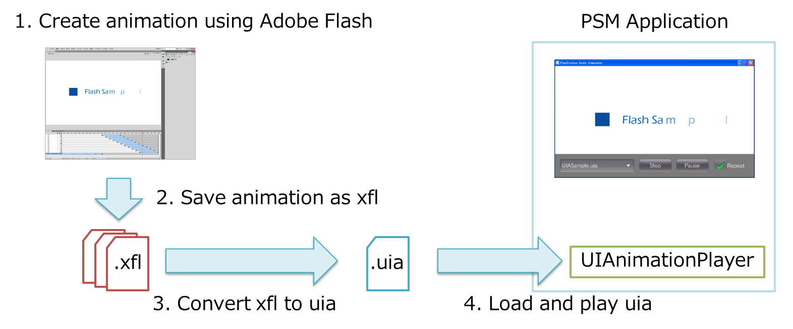

この章では、Adobe Flash を利用してウィジェットアニメーションを制作する方法を解説します。
Contents
UIToolkit では、Adobe Flash で制作されたモーション(動き)を Widget に適用することや、アニメーション(複数の画像とモーションのセット)を専用 Player を用いて再生することができます。
モーションやアニメーションを定義するための専用バイナリフォーマットとして、uim フォーマット、uia フォーマットを用意しています。
uim フォーマットは、モーションを定義するためのフォーマットです。UIMotion クラスを用いて uim ファイルをロードし、Widget にモーションを適用することができます。
uia フォーマットは、アニメーションを定義するためのフォーマットです。UIAnimationPlayer を用いて uia ファイルをロードし、アニメーションを再生することができます。
PSM SDK に付属の AnimationConverter ツール を使用すれば、Adobe Flash で制作されたデータを uim、uia ファイルにコンバートすることができます。
モーションデータを利用する手順を解説します(図1)。

図1 モーションデータの利用手順
Adobe Flash を用いてモーションを制作
モーションをモーションプリセットファイル(*.xml)として保存
2-1. 保存したいモーションを選択し、右クリック > [モーションプリセットとして保存] を選択
2-2. プリセット名を入力し、[OK] を選択
2-3. [ウィンドウ] > [モーションプリセット] にチェックマークを追加
2-4. モーションプリセットウィンドウで保存したいプリセットを選択し、右クリック > [書き出し] を選択
2-5. xml の名前を入力し、[保存] を選択
AnimationConverter ツールを用いて uim ファイルに変換
以下のコマンドを利用し、2. で保存した xml ファイルを uim ファイルに変換
cd %SCE_PSM_SDK%/tools/AnimationConverter/ AnimationConverter.exe <XML file path>uim ファイルへの変換時に AnimationConverter ツールで使用できるオプションは表1 の通りです。
表1 uim の変換時に使用できるオプション オプション
説明
-o, --output-filename
出力ファイル名を指定する。指定がなかった場合、入力ファイル名の拡張子を *.uim に変換したものを出力ファイル名として使用する。
--help
ヘルプ情報を表示する。
--version
バージョン情報を表示する。
UIMotion クラスを用いて、3. で作成した uim ファイルをロードし、Widget にモーションを追加
uim ファイルを UIMotion クラスを用いて読み込み、Button にモーションを適用するサンプルコード
Button button = new Button(); button.SetPosition(100.0f, 100.0f); scene.RootWidget.AddChildLast(button); UIMotion.CreateAndStart(button, "/Application/sample.uim");
アニメーションデータを利用する手順を解説します(図2)。
図2 アニメーションデータの利用手順
Adobe Flash を用いてアニメーションを制作
制作したアニメーションを xfl 形式で保存
2-1. [ファイル] > [名前を付けて保存] を選択
2-2. ファイルの種類 として、[Flash CS5.5 非圧縮ドキュメント (*.xfl)] もしくは、[Flash CS5 非圧縮ドキュメント (*.xfl)] を選択し、[保存] を選択
AnimationConverter ツールを用いて uia ファイルに変換
以下のコマンドを利用し、2. で保存した xfl ファイルを uia ファイルに変換
cd %SCE_PSM_SDK%/tools/AnimationConverter/ AnimationConverter.exe <XFL file path>uia ファイルへの変換時に AnimationConverter ツールで使用できるオプションは表2 の通りです。
表2 uia の変換時に使用できるオプション オプション
説明
-o, --output-filename
出力ファイル名を指定する。指定がなかった場合、入力ファイル名の拡張子を *.uia に変換したものを出力ファイル名として使用する。
-c, --config
設定ファイルを指定する。
--create-config
デフォルトの設定ファイル(default.config)を生成する。このオプションを指定した場合は、他のオプションはすべて無視される。
--help
ヘルプ情報を表示する。
--version
バージョン情報を表示する。
AnimationConverter では、Adobe Flash のムービークリップ単位でアニメーションをループするかしないかを制御することができます。
ループの制御を行う場合は、以下のような設定ファイルを用意し、uia ファイルに変換する際に指定してください。
_root,loop=off sampleA,loop=on sampleB,loop=off sampleC,loop=on設定ファイルは、csv 形式で記述し、先頭フィールドにムービークリップ名、二番目のフィールドにループの on/off を指定してください。
ループの指定がなかった場合は、デフォルトでループします。
ムービークリップ名として "_root" を指定した場合は、アニメーション全体をループ再生するかどうかを指定できます。
UIAnimationPlayer クラスを用いて、3. で作成した uia ファイルをロードし、アニメーションを再生
uia ファイルを UIAnimationPlayer クラスを用いて読み込み、アニメーションを再生するサンプルコード
UIAnimationPlayer uiaPlayer = new UIAnimationPlayer("/Application/sample.uia"); uiaPlayer.SetPosition(100.0f, 100.0f); scene.RootWidget.AddChildLast(uiaPlayer); uiaPlayer.Play();
- AnimationConverter ツールは、現在、Adobe Flash CS5 以降で制作されたデータにのみ対応しています。
- Adobe Flash のアートワーク(bmp, jpeg, png, gif)、モーショントゥイーンのみに対応しています。クラシックトゥイーン、シェイプトゥイーン、フレームアニメーション、ベクターグラフィックス、テキスト、サウンド、ビデオ、ActionScript等には対応していません。
- モーショントゥイーンで使用可能なプロパティは、基本モーション(X、Y、Z、回転 X、回転 Y、回転 Z)、変形(伸縮 X、伸縮 Y)、カラー効果(アルファ)のみです。傾斜変形、フィルター等には対応していません。
- アニメーションのイージングカーブは、現時点では完全に再現できていない場合があります。また、カスタムイージングカーブには対応していません。
- 複数シーンには対応していません。